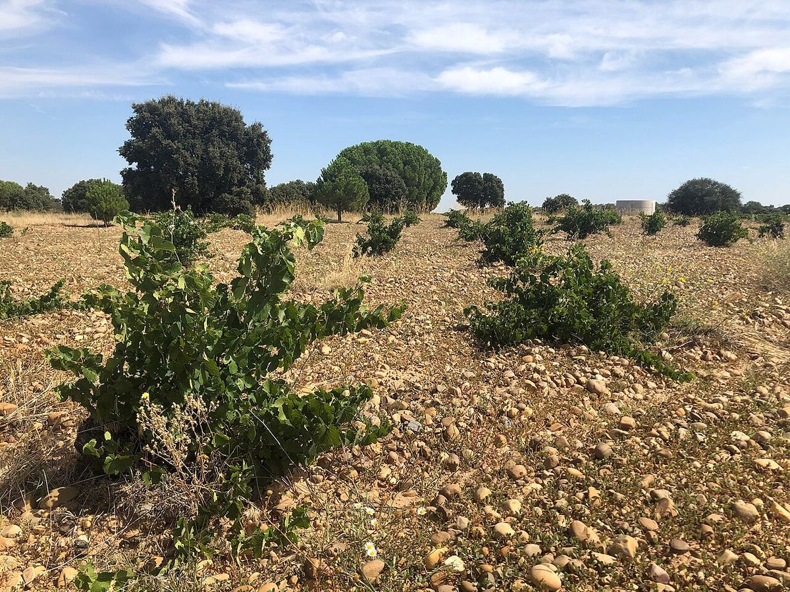

BIANCO
Rueda, istituita nel 1980, è stata la prima denominazione di origine della Castiglia e León. È il grande punto di riferimento per il Verdejo e per i vini bianchi della Meseta settentrionale.

La viticoltura nella zona di Rueda è documentata fin dal Medioevo, e per secoli i suoi vini rifornirono le città della Meseta, in particolare Valladolid e le fiere di Medina del Campo. Le cantine scavate nel sottosuolo di molti paesi testimoniano questa tradizione. A lungo la zona fu nota per vini ad affinamento ossidativo, prodotti in gran parte con il Palomino. Un cambiamento decisivo avvenne a partire dagli anni Settanta: l'arrivo di cantine di altre regioni, come Marqués de Riscal, favorì la produzione di bianchi giovani e freschi a base di Verdejo e l'introduzione del Sauvignon Blanc. Nel 1980 Rueda divenne la prima denominazione di origine della Castiglia e León.
La denominazione si trova a sud del fiume Duero e comprende comuni delle province di Valladolid, che concentra la maggior parte dei vigneti, Segovia e Ávila. I vigneti si trovano su un altopiano pianeggiante, a circa 700-800 metri di altitudine. Il clima è continentale, con inverni lunghi e freddi, primavere brevi con rischio di gelate tardive, estati calde e secche e piogge scarse. La notevole differenza di temperatura tra il giorno e la notte durante la maturazione aiuta l'uva a conservare acidità e aromi. Per proteggere tali aromi è frequente la vendemmia notturna.
I suoli più caratteristici sono bruni e sassosi, ricchi di ciottoli di origine fluviale chiamati localmente cascajo, che favoriscono drenaggio e aerazione. In altre zone i suoli sono più sabbiosi o calcarei.
Il Verdejo è il vitigno simbolo: dà bianchi di buona acidità, con aromi erbacei e di frutta bianca e un finale dal tipico leggero amarognolo. Si coltivano anche Sauvignon Blanc, Viura (Macabeo) e Palomino. Oltre ai bianchi giovani, la denominazione tutela bianchi fermentati o affinati in barrique, spumanti metodo classico e i vini liquorosi della tradizione locale: il Dorado, ad affinamento ossidativo, e il Pálido, ad affinamento biologico sotto velo di flor. Dal 2008 il disciplinare comprende anche rossi e rosati, ottenuti principalmente da Tempranillo insieme a Cabernet Sauvignon, Merlot e Garnacha.
I vini che indicano un vitigno in etichetta, come il Verdejo o il Sauvignon Blanc, devono essere prodotti in prevalenza con quell'uva, secondo le percentuali stabilite dal disciplinare della denominazione.